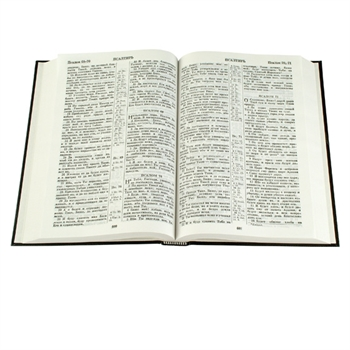

Что такое Библия?
Одна большая книга?
Одна из первых вещей, которые мы узнаем о Библии, это то, что это вовсе не одна книга, а собрание из 66 книг! Хотя мы называем их книгами, Библия на самом деле состоит из рассказов, историй, стихов и песен, биографий и нескольких писем. (Это было до появления электронной почты, помните?)
Поскольку Библия содержит так много разных типов написания, ее обычно не читают от корки до корки, как большинство современных книг (хотя это, безусловно, возможно). Скорее, верующие обычно приходят к Библии, чтобы прочитать определенные отрывки, например, истории об Иисусе или песни хвалы, написанные Богу.
На рисунке справа показано, как книги Библии сгруппированы по категориям (или жанрам).
Чтобы понять, почему Библия состоит из такого количества разных книг, полезно немного узнать об истории Библии и о том, как она была написана. Бог начал вдохновлять людей записывать Его послания человечеству около 3000 лет назад (первые даты немного размыты). На протяжении примерно 1600 лет по меньшей мере сорок разных писателей из разных периодов истории и разных мест по всему миру записывали то, что Бог вдохновил их сказать. И все же, несмотря на такое разнообразие авторов, Библия в основном рассказывает одну историю: историю, которая ведет людей к Иисусу, который был высшим посланием Бога миру.

Библия может показаться очень БОЛЬШОЙ книгой. Некоторые люди думают или слышали, что Библия загадочна и трудна для понимания. Возможно, им даже сказали, что только служители или священники могут по-настоящему понимать Библию.
Вот почему полезно знать, чем на самом деле является Библия: Божье послание для ВСЕХ людей во всем мире, предназначенное для чтения обычными людьми (каждыми!).

Что такое завещание?
Слово «завещание» может навести нас на мысль о завещании («последняя воля и завещание»): юридическом документе, в котором излагаются желания человека относительно того, что произойдет с его имуществом и имуществом после его смерти. В Библии, задолго до того, как Иисус пришел на землю, Бог впервые выразил Свою волю, чтобы люди знали Его и поклонялись Ему как своему ЕДИНСТВЕННОМУ Богу; взамен Бог простил людям их грехи. Первый раздел Библии, Ветхий Завет, представляет собой историю о том, как человечество ответило на волю Бога.
Поскольку человечество НЕ последовало воле Бога, Бог открыл для них новый способ прощения: отправить Иисуса, Своего единственного сына, на землю, чтобы умереть за их грехи. Истории Иисуса и тех, кто решил следовать за Ним, — это истории Божьего Нового Завета, или воли, для человечества, которое Он создал. Итак, Библия делится на Ветхий Завет и Новый Завет: книги, которые были написаны до прихода Иисуса в мир, и те, которые были написаны после.

Как мне найти отрывок в Библии?
Чтобы облегчить чтение Библии, очень полезно ознакомиться с названиями библейских книг. Хотя это может показаться трудной задачей, полезно ЗАПОМНИТЬ все имена по порядку. Поставьте себе задачу запоминать 10 имен в день. Когда вы начнете запоминать следующие 10, обязательно сначала произнесите предыдущие, которые вы выучили, чтобы иметь возможность прочитать их все по порядку.
Список книг Библии следует ниже. Вы можете использовать это как руководство для их запоминания. Некоторые имена могут показаться трудными для произношения; например, книга Иова произносится так, как если бы в конце у нее была буква «е» («йобе»). Если у вас есть вопросы о том, как произносить название книги, не стесняйтесь задать их учителю по изучению Библии или служителю церкви, которую вы посещаете.
Откройте Библию на любой странице, и вы увидите множество маленьких абзацев, каждый из которых имеет свой номер. Это так называемые стихи. Сборник стихов называется главой (и не во всех главах одинаковое количество стихов). Единственным исключением из этого правила является книга Авдия в Древней Греции.

Завет и книги Филимону, 2 и 3 Иоанна и Иуды в Новом Завете; они не разделены на главы. Когда люди ссылаются на определенные отрывки из Библии, они используют так называемые «главы и стихи». Если бы кто-то хотел, чтобы вы нашли шестнадцатый стих в третьей главе книги Иоанна, вы, вероятно, увидели бы его написанным так: Иоанна 3:16.
Вот тут-то и пригодится запоминание названий книг Библии: вы будете знать, что Иоанн — четвертая книга Нового Завета. Найдя книгу Иоанна, вы затем будете искать третью главу и, наконец, шестнадцатый стих. Все ссылки на отрывки в Библии пишутся, как указано выше, вместе с Иоанном 3:16 (иногда используется сокращение книги). Если речь идет о более чем одном стихе, его следует написать так: Исход 20:1-17. Это означает, что вы найдете первые семнадцать стихов двадцатой главы книги Исход. Кусок пирога!
Ветхий Завет
- Бытие
- Исход
- Левит
- Числа
- Второзаконие
- Иисус Навин
- Судьи
- Руфь
- 1 Царств
- 2 Царств
- 3 Царств
- 4 Царств
- 1 Паралипоменон
- 2 Паралипоменон
- Ездра
- Неемия
- Есфирь
- Иов
- Псалмы
- Притчи
- Екклесиаст
- Песнь Песней
- Исаия
- Иеремия
- Плач Иеремии
- Иезекииль
- Даниил
- Осия
- Иоиль
- Амос
- Авдия
- Иона
- Михей
- Наум
- Аввакум
- Софония
- Аггей
- Захария
- Малахия
Новый Завет
- Матфей
- Марк
- Лука
- Иоанн
- Деяния
- Римлянам
- 1 Коринфянам
- 2 Коринфянам
- Галатам
- Ефесянам
- Филиппийцам
- Колоссянам
- 1 Фессалоникийцам
- 2 Фессалоникийцам
- 1 Тимофею
- 2 Тимофею
- Титу
- Филимону
- Евреям
- Иаков
- 1 Петра
- 2 Петра
- 1 Иоанна
- 2 Иоанна
- 3 Иоанна
- Иуда
- Откровение